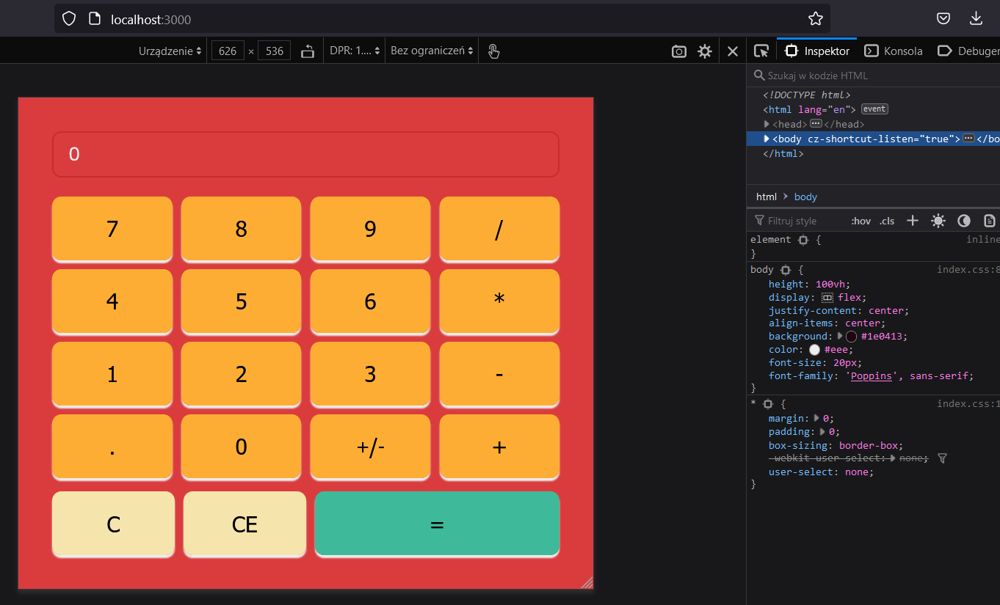
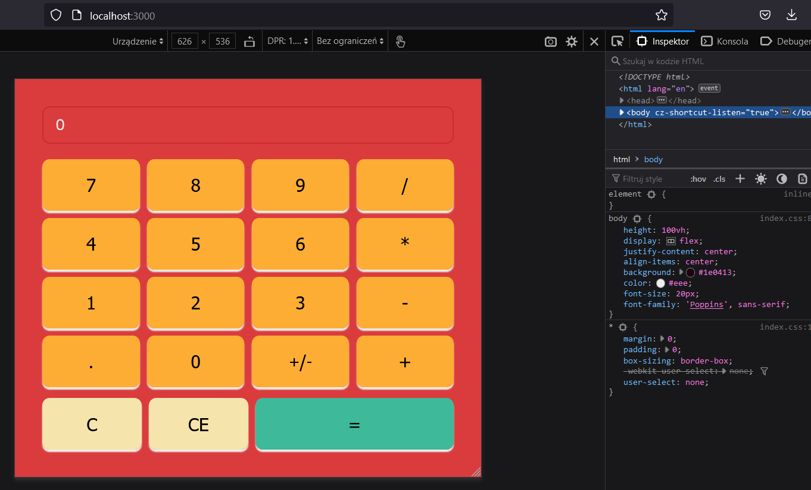

Sieci Komputerowe
Nauka o sieciach komputerowych jest niezbędna do profesjonalnego wykonywania zawodu informatyka. Dowiesz się jak w sieci przesyłane są dane, jakie wykorzystujemy protokoły komunikacji i jak powinniśmy łączyć urządzenia sieciowe. Ponadto, nauczysz się jak zarobić kabel sieciowy oraz pokażemy Ci jak spawa się światłowody.
 
